📰 Ultimele stiri
Vezi toate ›Curent oprit în mai multe localități din Mehedinți în această săptămână
Locuitorii mai multor zone din județul Mehedinți trebuie să se pregătească pentru întreruperi temporare ale alimentării ...
România deschide piața Chinei pentru produsele agroalimentare. Vești importante pentru fermieri
Vești importante pentru fermierii români. Produsele din România vor putea ajunge pe piața Chinei, una dintre cele mai ma...
COD GALBEN de vânt în Mehedinți, Dolj și Olt — ANM avertizează: rafale de 50–60 km/h mâine, 18 martie 2026
Administrația Națională de Meteorologie a emis o avertizare de tip cod galben care vizează intensificări ale vântului în...
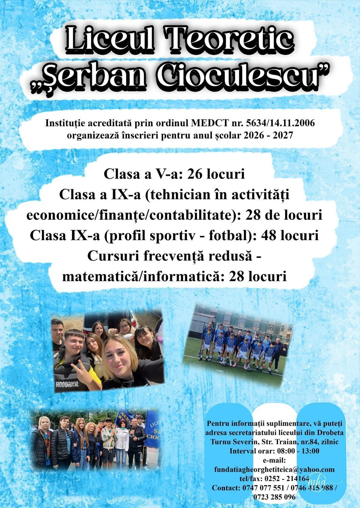
Oferta educațională 2026–2027 a unităților de învățământ aflate sub patronajul Fundației „Gheorghe Țițeica" din Drobeta-Turnu Severin
Fundația Gheorghe Țițeica deschide perioada de înscrieri pentru anul școlar 2026–2027 în cadrul unităților de învățământ...
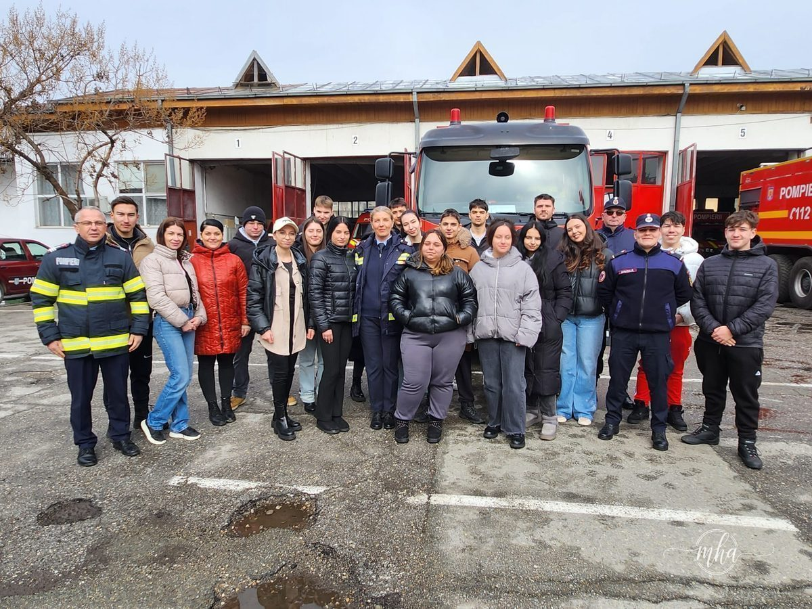
Noi voluntari la ISU Mehedinți — tinerii înscriși în programul „Salvator din pasiune" au finalizat cursul introductiv și se pregătesc să salveze vieți
Voluntarii recrutați în programul „Salvator din pasiune" al Inspectoratului pentru Situații de Urgență Mehedinți au înch...
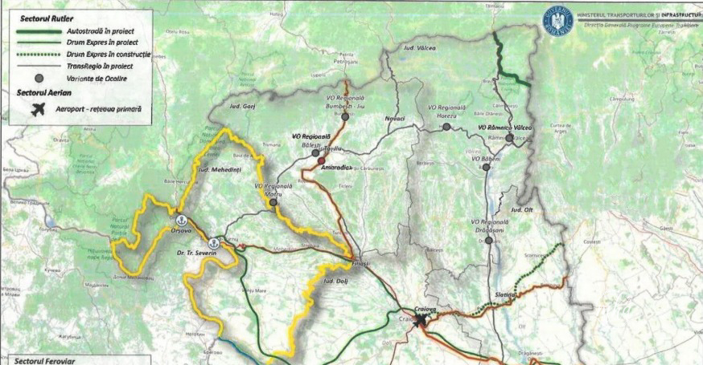
Pași concreți pentru Drumul Expres Severin – Calafat! Tronsonul va avea 70 de kilometri
Ministerul Transporturilor a aprobat acordul de parteneriat dintre CNAIR, Consiliul Județean Mehedinți și Consiliul Jude...
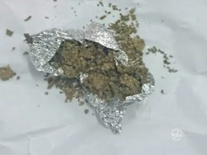
Tânăr de 27 de ani prins de jandarmi cu substanțe cu efect psihoactiv lângă un centru comercial din Drobeta-Turnu Severin
Un bărbat de 27 de ani a fost depistat de jandarmii mehedințeni în timp ce se afla în apropierea unui centru comercial d...
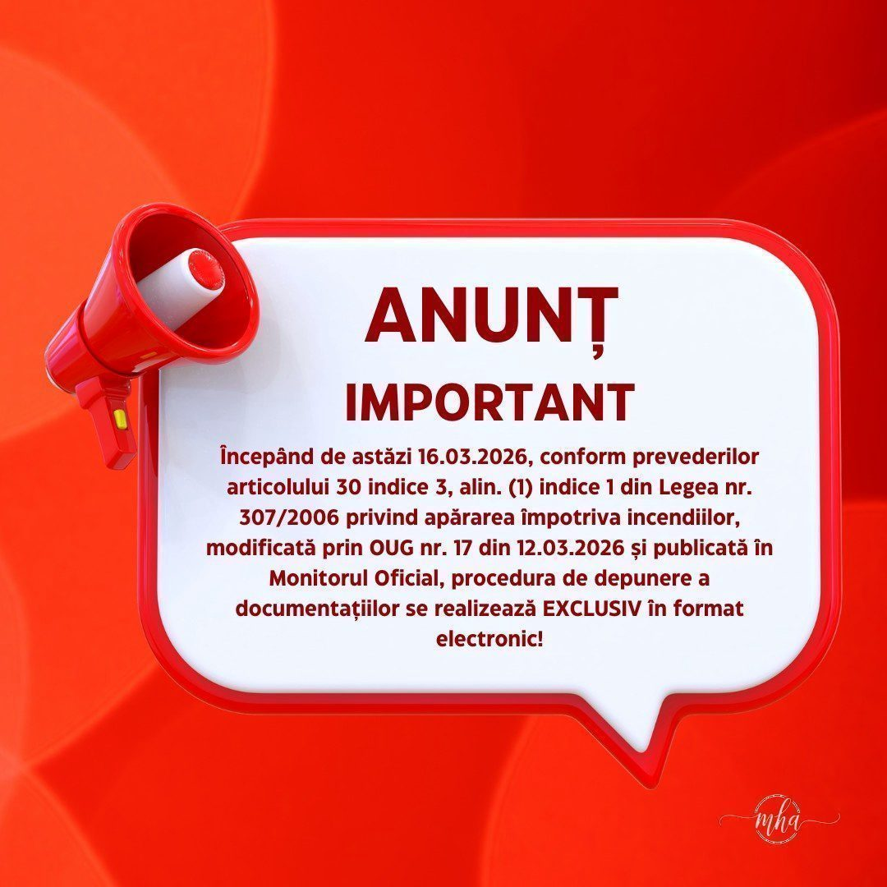
ANUNȚ IMPORTANT – ISU Mehedinți: Avizele și autorizațiile de securitate la incendiu se depun exclusiv în format electronic, începând de astăzi
Inspectoratul pentru Situații de Urgență „Decebal" al județului Mehedinți anunță că, începând cu data de 16 martie 2026,...
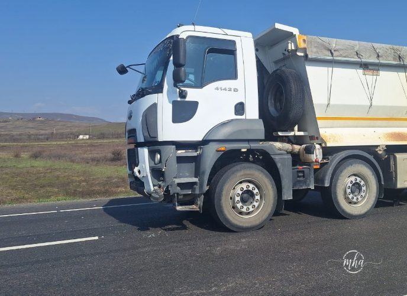
Accident pe centura Severinului: o mașină a ajuns pe câmp după ce a fost lovită din spate de o basculantă
Un autoturism a fost proiectat pe câmp în urma unui impact violent cu o basculantă, produs pe centura ocolitoare a munic...
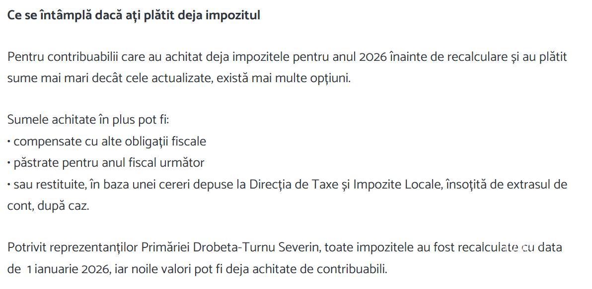
Impozitele au fost recalculate la Drobeta-Turnu Severin. Ce faci dacă ai plătit deja mai mult decât noua valoare
Primăria municipiului Drobeta-Turnu Severin a actualizat toate impozitele locale, cu efect de la 1 ianuarie 2026. Contri...
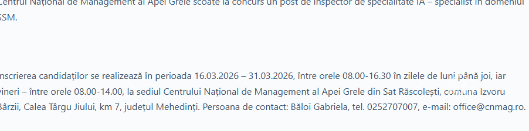
Centrul Național de Management al Apei Grele face angajări. Post de inspector de specialitate IA — SSM, scos la concurs
Una dintre cele mai importante instituții din județul Mehedinți aflate sub coordonarea Ministerului Energiei scoate la c...
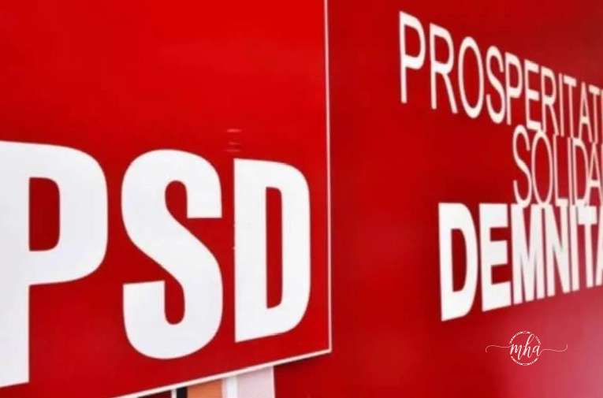
PSD va vota Legea Bugetului de Stat, dar nu va gira austeritatea. Aladin Georgescu: „Amendamente esențiale care să reflecte viziunea social-democrată"
Aladin Georgescu, președintele Consiliului Județean Mehedinți, a participat la ședința Consiliului Politic Național al P...

Stire noua

Verificări medicale gratuite la Supernova Drobeta, în fiecare weekend din martie
Până la finalul lunii martie, locuitorii din Drobeta-Turnu Severin pot beneficia gratuit de măsurarea tensiunii arterial...

Minora de 13 ani din Șimian, violată și de unchiul ei. Bărbatul de 53 de ani a fost reținut
Noi detalii șocante ies la suprafață în cazul minorei de 13 ani din Șimian. Pe lângă vecinul deja arestat preventiv 30 d...

Control al Gărzii de Mediu în Mehedinți: dezmembrări auto ilegale și deșeuri depozitate direct pe sol
Comisarii Gărzii Naționale de Mediu, împreună cu polițiștii, au descoperit în comuna Șimian patru persoane care dezmembr...

Control la firmele cu muncitori străini din Mehedinți: peste 130 de persoane verificate de polițiști
Acțiunea a vizat prevenirea migrației ilegale și verificarea respectării legislației privind angajarea cetățenilor străi...

Minor agresat în mod repetat de tatăl său. Bărbat de 52 de ani, reținut de polițiști în Mehedinți
Polițiștii Secției de Poliție Rurală Izvorul Bîrzii s-au autosesizat după ce au apărut informații că un minor ar fi fost...

Deputatul Alin Tomoescu (PSD Mehedinți): „Statul are datoria morală de a oferi șanse egale tinerilor crescuți în sistemul de protecție specială"
Deputatul PSD Mehedinți Ion Alin Tomoescu a votat în plenul Camerei Deputaților pentru adoptarea unui proiect de lege ca...

PSD va aviza proiectul de buget pentru a rezolva în Parlament ceea ce a fost blocat de premier la nivel guvernamental
Reprezentanții PSD din Guvern vor aviza, cu obiecții, proiectul de buget pentru a depăși blocajul provocat de premierul ...

Action s-a deschis la Drobeta-Turnu Severin! Zeci de persoane au așteptat inaugurarea în Supernova. Mii de produse disponibile!
Un nou magazin s-a deschis în incinta centrului comercial Supernova din Drobeta-Turnu Severin. Zeci de persoane au aștep...

Simpozion „Tendințe și provocări în învățământul tehnologic” la Colegiul Costescu din Drobeta
Cu ocazia Zilei Naționale a Meseriilor, Colegiul Național Economic „Theodor Costescu” a organizat un simpozi...

Casa facuta scrum, noaptea trecuta, in Bobaita! Proprietarul era plecat in strainatate
O casa din satul Bobaita, judetul Mehedinti, a ars din temelii. Proprietarul este plecat in strainatate, iar vecinii sun...

Accident violent, produs in Severin! Patru victime, pagube insemnate
Un accident s-a produs in urma cu putin timp la intersectia strazilor Kiseleff – Gheorghe Ionescu Sisesti din Drob...
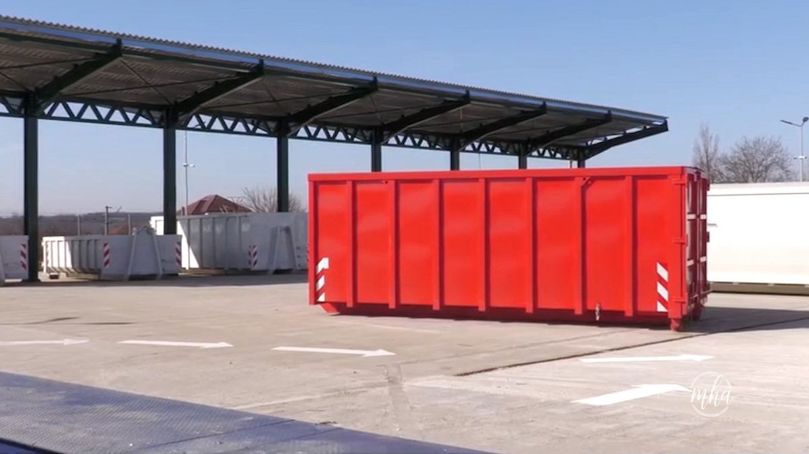
Centru de Colectare prin Aport Voluntar în comuna Șimian — soluție modernă pentru deșeuri
Locuitorii din Șimian vor putea preda deșeuri voluminoase, electronice, reciclabile și periculoase la noul centru de colectare care urmează să fie implementat în comună.
Guvernul Bolojan apără la CCR reforma administrativă contestată de Avocatul Poporului
Premierul Bolojan a depus la Curtea Constituțională argumentele în susținerea celor 4 măsuri din OUG 7/2026, atacate de Renate Weber. Este prima dată în 3 ani când instituția exercită această prerogativă.

Șofer de 30 de ani din Drobeta-Turnu Severin, depistat la volan cu indicii de cocaină
Polițiștii Biroului Rutier din cadrul Poliției Municipiului Drobeta-Turnu Severin au oprit seara trecută un bărbat de 30...

Se reduc impozitele pentru autoturisme în Drobeta-Turnu Severin
Consiliul Local din Drobeta-Turnu Severin a aprobat reducerea impozitelor pentru autoturisme. Măsura vizează diminuarea ...
Stire noua
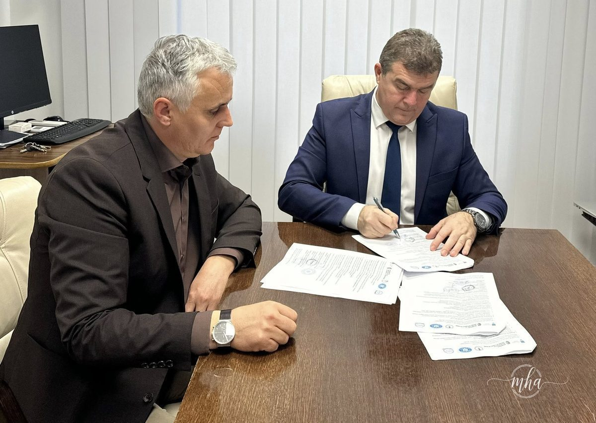
Consiliul Județean Mehedinți, partener în organizarea Olimpiadei Naționale de Matematică
Protocolul de parteneriat a fost semnat astăzi între Consiliul Județean Mehedinți, ISJ Mehedinți, Primăria Drobeta-Turnu...
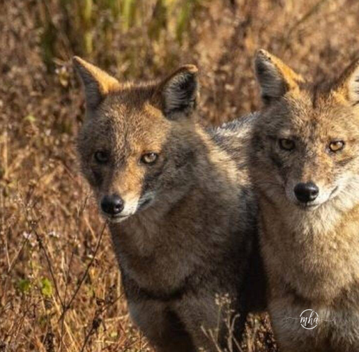
Atacuri tot mai dese ale șacalilor în satele din Mehedinți: „Sunt tot mai agresivi. Omoară câte 10 – 20 de animale."
Fenomen îngrijorător în tot mai multe sate din Mehedinți: haitele de șacali atacă noaptea gospodăriile, omoară păsări, c...
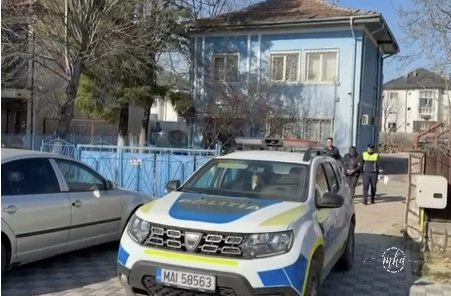
A furat de la propria soră: femeie reținută după ce a sustras bijuterii din aur din locuința rudei
O femeie de 49 de ani din județul Mehedinți a fost reținută de polițiști după ce ar fi pătruns fără drept în locuința su...
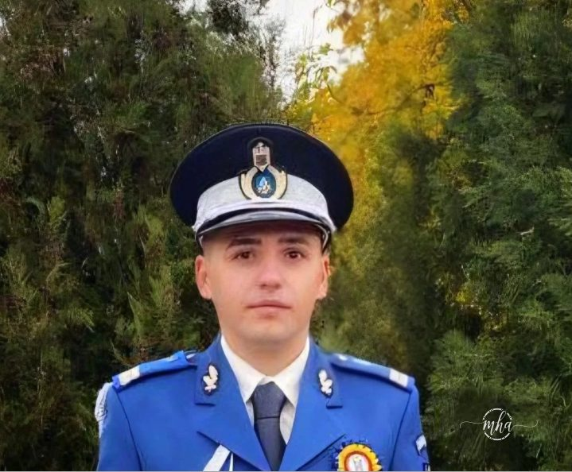
Jandarm din Mehedinți, erou în timpul liber: a acordat primul ajutor unui bărbat găsit inconștient pe stradă
Sergentul-major Roșca Marin, jandarm din comuna Cujmir, a intervenit prompt pentru a salva o persoană căzută inconștient...
Impozite reduse la Drobeta-Turnu Severin. Consiliul Local aprobă mâine noile taxe după decizia Guvernului
Primarul Marius Screciu propune consilierilor locali eliminarea cotei adiționale la impozitul pe autoturisme. Persoanele...

Geoparcul Platoul Mehedinti, contract de administrare prelungit cu 10 ani. Semnatura pusa de presedintele Aladin Georgescu
Consiliul Judetean Mehedinti a semnat prelungirea contractului de administrare a Geoparcului Platoul Mehedinti pentru in...

9 Martie — Ziua Detinutilor Politici Anticomunisti. Aladin Georgescu: “Memoria lor ramane o datorie de constiinta”
Pe 9 martie este marcata Ziua Detinutilor Politici Anticomunisti din Perioada 1944-1989. Presedintele Consiliului Judete...

Ziua Olteniei, sarbatorita la Targu Jiu pe 18 Martie. Ansamblul "Doina Mehedintiului" urca pe scena
Sala Sporturilor din Targu Jiu va gazdui pe 18 martie 2026 evenimentul "Cantec si joc in Tara lui Brancusi", dedicat Zil...

Accident pe DN56A la Punghina. Un autotren si un autoturism s-au ciocnit, o persoana ranita
Un accident rutier s-a produs pe DN56A, in localitatea Punghina din judetul Mehedinti. In urma impactului dintre un auto...

Traficant de droguri arestat la Drobeta-Turnu Severin. Vindea cocaina cu 300-600 lei doza
Un barbat de 36 de ani a fost retinut si arestat preventiv 30 de zile dupa ce politistii din Mehedinti l-au prins vanzan...
Ziua Femeii, celebrată cu muzică, poezie și dans la Palatul Culturii din Drobeta-Turnu Severin
Sala „Grigore Cerchez" a găzduit un spectacol de suflet organizat de Liceul Teoretic „Șerban Cioculescu", cu momente art...
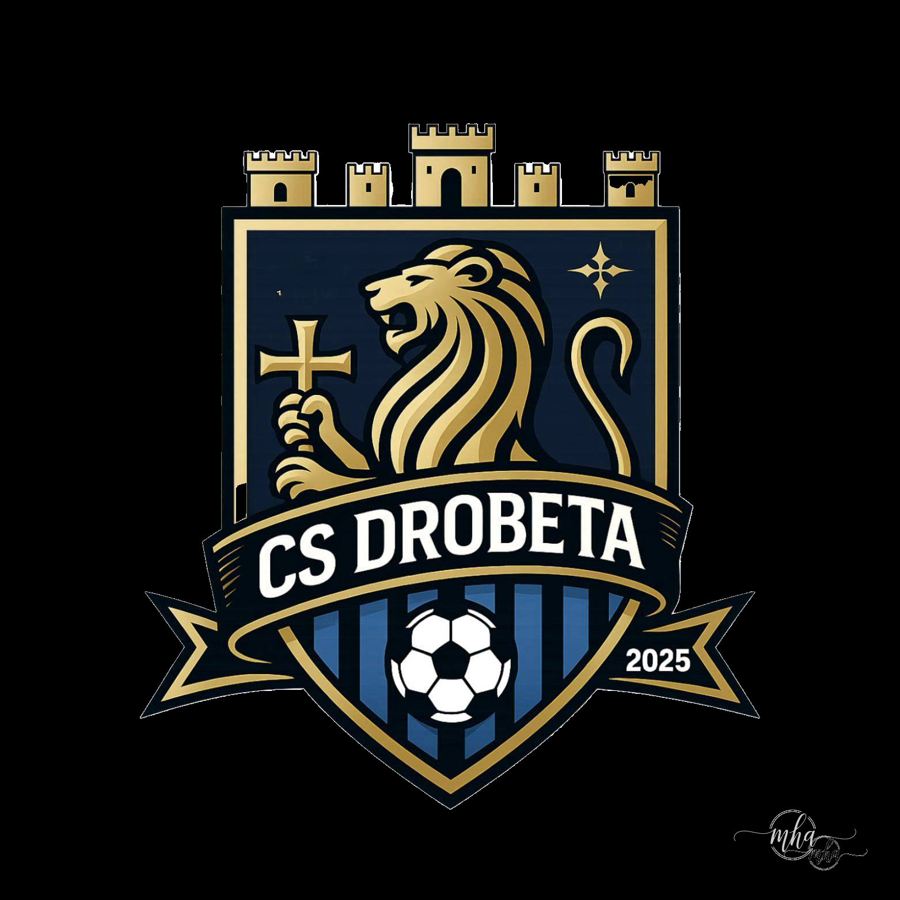
CS Drobeta si-a lansat imnul oficial: „Un oras, o echipa, un vis!"
Clubul de fotbal CS Drobeta a facut o surpriza neasteptata suporterilor sai, lansand imnul oficial al echipei inaintea r...
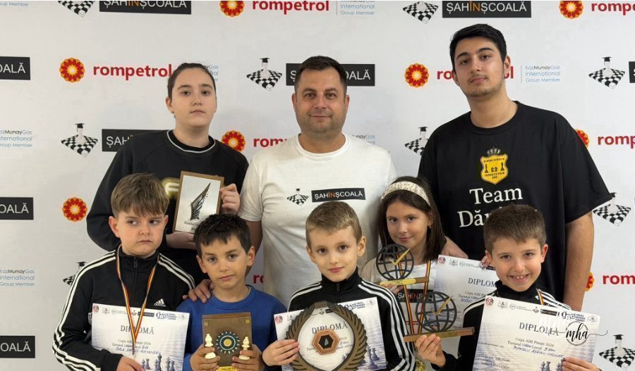
Micii sahisti din Drobeta-Turnu Severin au urcat pe podium la Cupa Alfil Pitesti — Circuitul Sudului
Sportivii Clubului Sportiv Educatie prin Sah, antrenati de profesorul Daniel Moti, au cucerit noi titluri prin partide s...
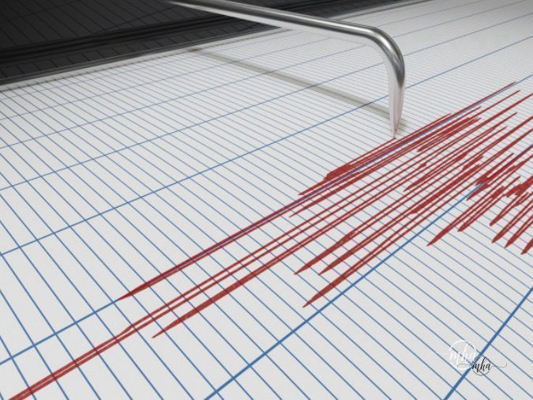
Cutremur resimtit in zona Mehedintiului, duminica seara. Seismul a avut magnitudinea 3,3
Un seism cu magnitudinea ML 3,3 s-a produs in Oltenia, judetul Gorj, la ora 21:53, la o adancime de 15 kilometri. Drobet...
Politistii de frontiera de la Portile de Fier au oferit flori doamnelor de 8 Martie: Un gest emotionant la granita Romaniei
Politistii de la PTF Portile de Fier I si PTF Portile de Fier II au surprins participantele la trafic cu flori, aducand ...
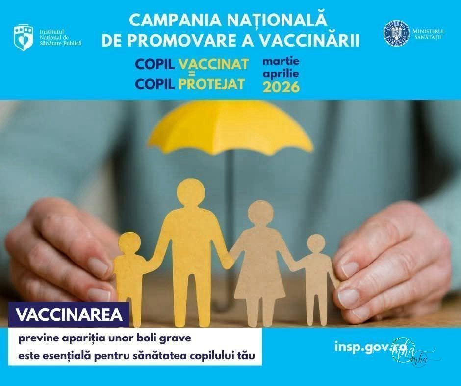
Campanie națională de vaccinare: „Copil vaccinat = copil protejat"
În perioada martie-aprilie 2026, autoritățile sanitare îndeamnă părinții să respecte Calendarul Național de Vaccinare pentru protejarea copiilor.
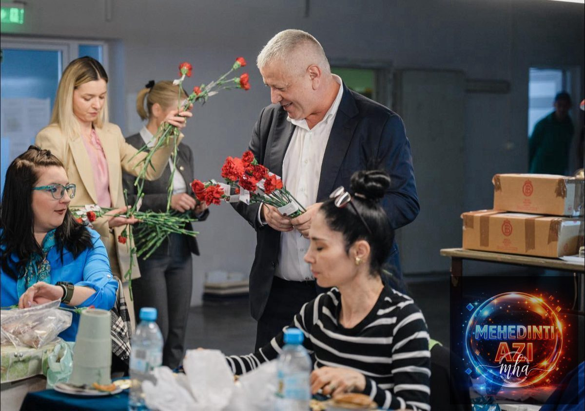
Primarul Screciu a impartit flori femeilor la locul de munca: „O traditie de suflet de aproape doua decenii"
Edilul Drobetei a vizitat fabrici si locuri de munca din oras, oferind garoafe rosii angajatelor — un gest repetat an de an de aproape 20 de ani.
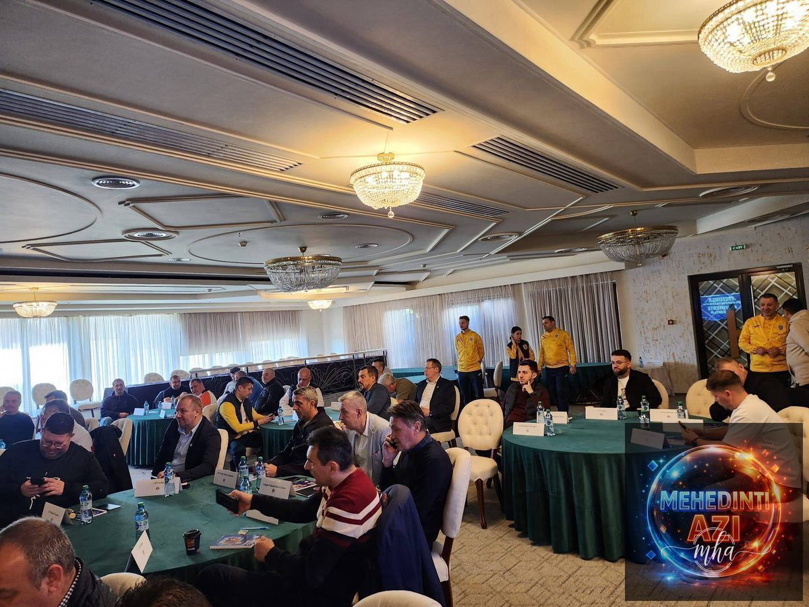
CS Luceafarul Drobeta, prezenta la Sesiunea Cluburilor cu Activitate Juvenila FRF – Sibiu 2026
Reprezentantii clubului mehedinтean au participat la forumul national FRF dedicat performantei si viitorului fotbalului juvenil, Sibiu 5-6 martie 2026.
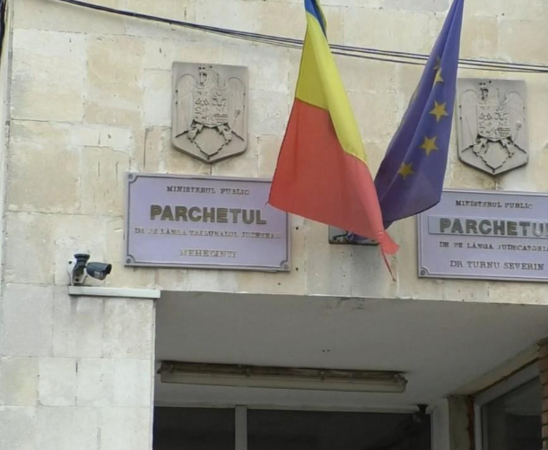
ARESTAT 30 de zile dupa ce a batut un inspector ITM: Administrator service auto din Drobeta, retinut
Barbatul de 39 de ani a refuzat sa prezinte documentele la controlul ITM, dupa care a trecut la agresiune fizica. Parchetul a dispus arestul preventiv.
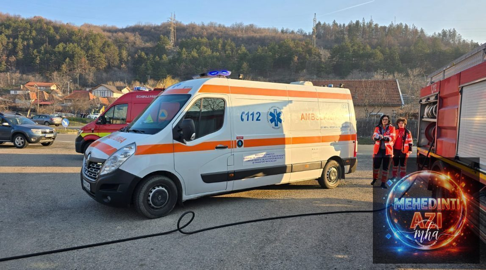
Tragedie la Gura Văii: Incendiu la o anexă gospodărească — o persoană găsită decedată
Un incendiu a cuprins o anexă gospodărească în această dimineață. Salvatorii au găsit în interior o persoană decedată. Pompierii și SAJ au intervenit de urgență.
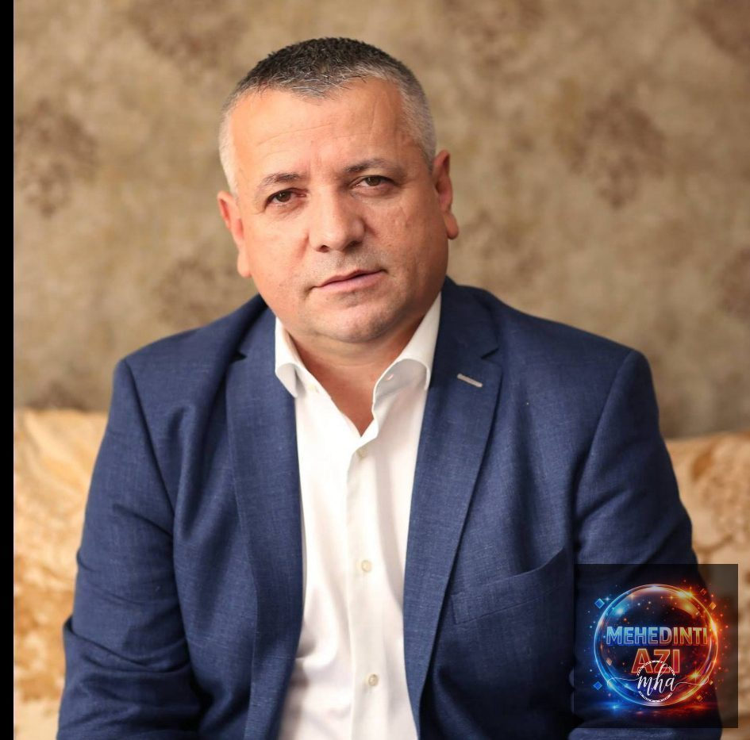
Screciu anunta reduceri de taxe la Drobeta: fara cote aditionale pentru masini, reduceri pentru locuinte vechi
Primarul Marius Screciu anunta masuri de reducere a impozitelor locale, folosind prevederile unei recente ordonante de guvern. Masurile merg la Consiliul Local.
83 de soferi testati in Mehedinti in 24 de ore — 8 permise retrase, amenzi de 61.000 lei
Politistii mehedinteni au desfasurat controale ample: 238 abateri constatate, 10 masini scoase din circulatie, 275 vehicule verificate.
Uniți pentru Nicolas: Clubul LEO organizează Spring Party caritabil pe 14 martie
Nicolas, 14 ani, luptă cu o tumoră la măduva spinării. Clubul LEO Spring Party — 14 martie, Loview Sky Events, bilet 50 RON. Orice donație contează.
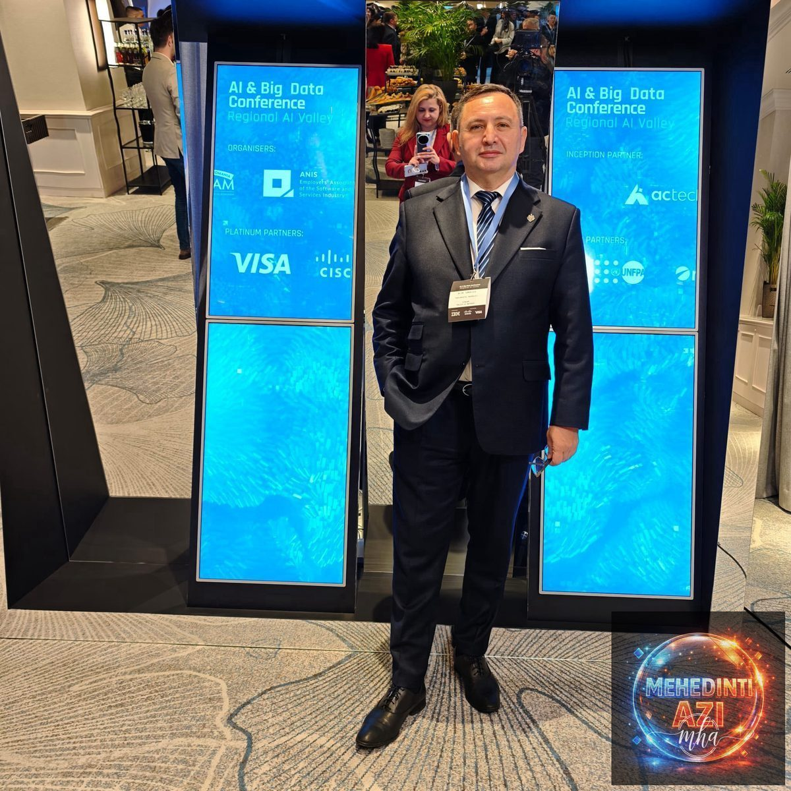
Deputatul Alin Tomescu, prezent la AI & Big Data Conference de la Bucuresti
Parlamentarul mehedinтean a participat la Regional AI Valley, alaturi de experti internationali si lideri din industria tehnologica din Romania, Moldova si Ucraina.
Alin Tomescu: Bugetul 2026 taie 3 miliarde din educație și lovește programele sociale
Deputatul PSD critică dur bugetul Bolojan: tăieri masive la educație, programe sociale eliminate, în timp ce corporațiile sunt favorizate.
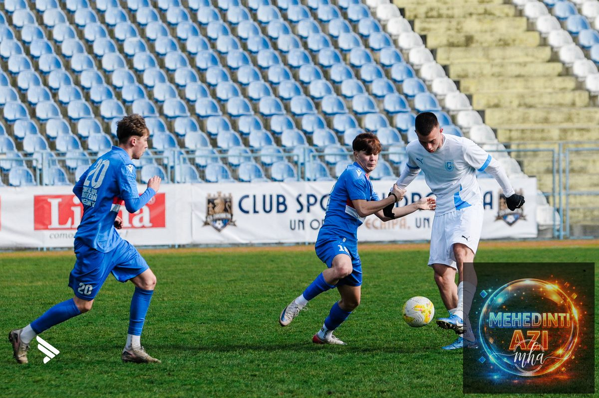
CS Drobeta, lider detasat in Liga 4 Mehedinti: 37 de puncte, 85 de goluri marcate
Drobetenii conduc detasat clasamentul cu 12 victorii si un egal in 13 meciuri. Urmatoarea etapa, pe 14 martie.
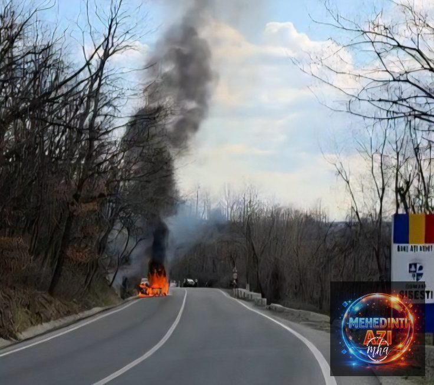
Autoturism în flăcări pe DN 67, la Ciovârnășani. Incendiul s-a generalizat
Un autoturism a luat foc pe DN 67 în zona Ciovârnășani. Incendiul s-a generalizat. Pompierii din Drobeta intervin de urgență.
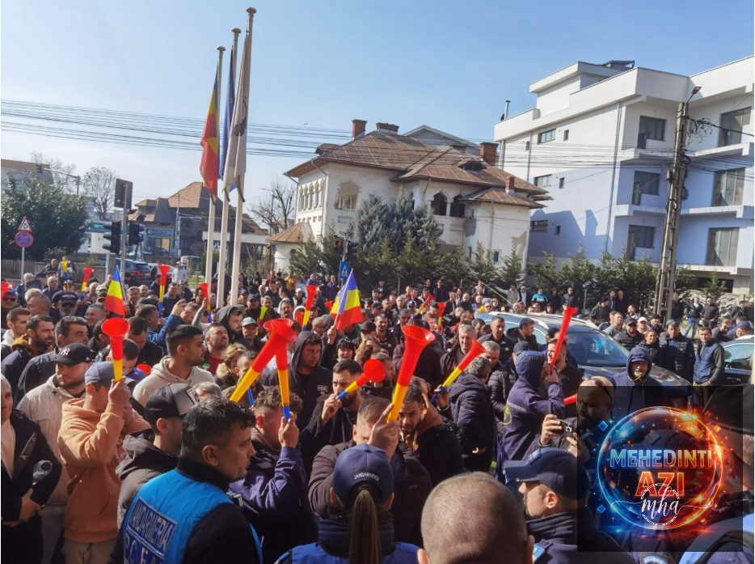
Negocieri eșuate la CEO Oltenia: 1.476 de angajați rămân fără locuri de muncă de la 1 aprilie
Discuțiile dintre conducerea Complexului Energetic Oltenia și sindicate s-au încheiat fără rezultat. Sute de angajați au protestat la Târgu Jiu.
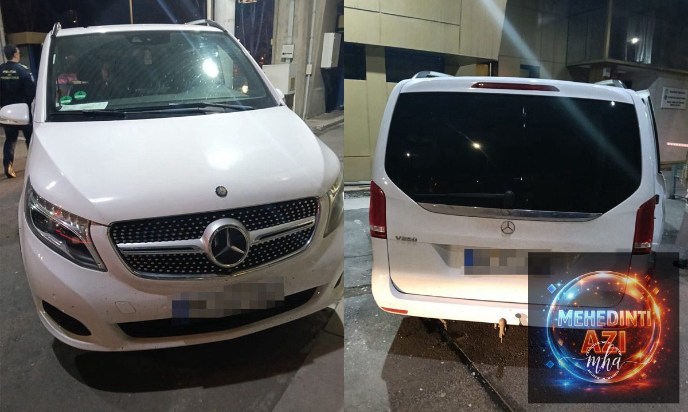
Autoturism căutat de Germania, descoperit la Porțile de Fier I de polițiștii de frontieră mehedințeni
Un Mercedes V250 de 127.000 lei, semnalat de Germania, a fost depistat de polițiștii de frontieră mehedințeni la PTF Porțile de Fier I.
Cutia Bebelușului ajunge și în Mehedinți. Peste 64 de produse gratuite pentru mame și nou-născuți
Județul Mehedinți se numără printre cele 23 de județe unde se derulează programul finanțat de Fundația OMV Petrom. Află cum te poți înscrie.
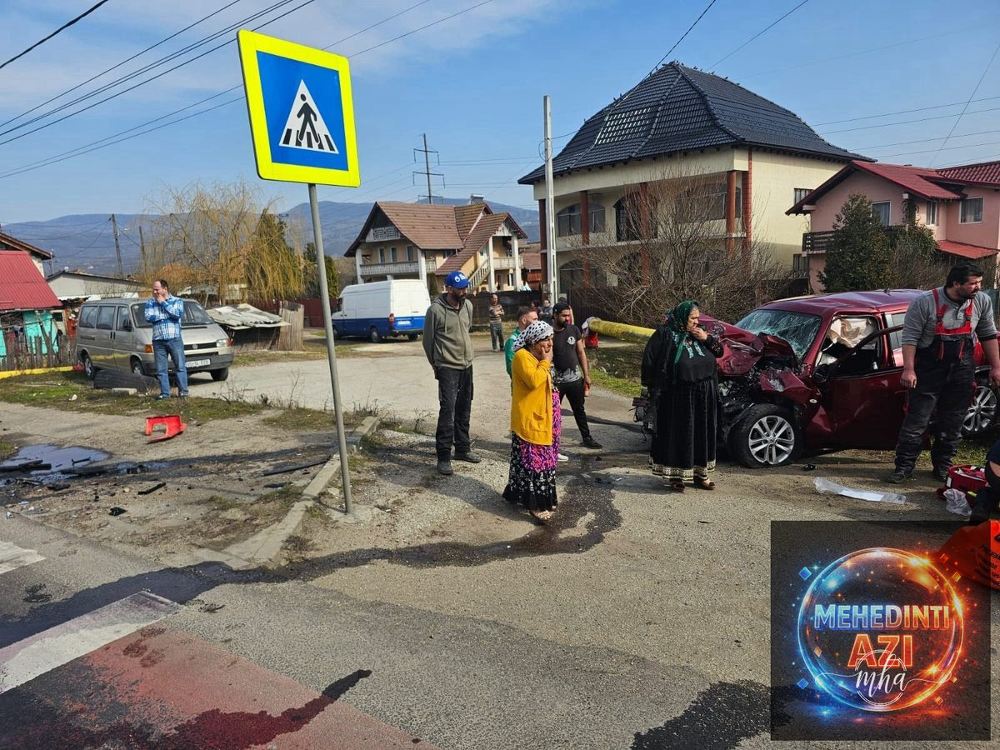
ACCIDENT GRAV pe DN6 la Gura Văii: Mașină zdrobită de două TIR-uri, victimă în stop cardiac
Un autoturism a fost strivit între două autocamioane. Victima a intrat în stop cardio-respirator. Trafic blocat pe ambele sensuri.
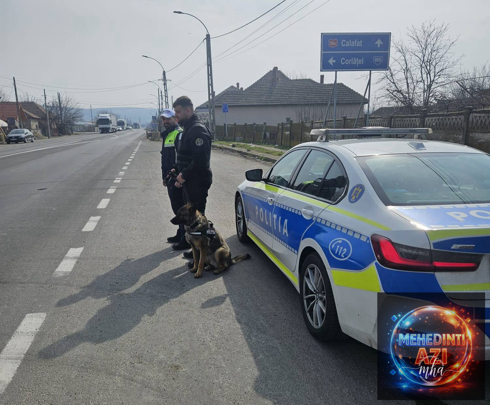
Razie amplă în Mehedinți: 7 șoferi fără permis, 15 mașini fără talon și amenzi de 49.000 lei
Polițiștii au desfășurat acțiuni de amploare pe drumurile județului. Rezultatele vorbesc de la sine.
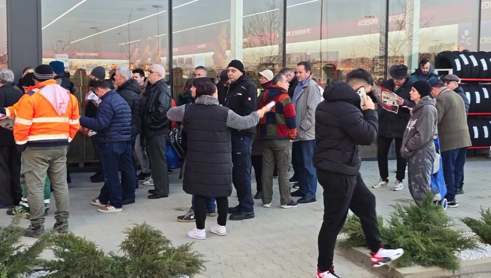
Severinenii au venit dis-de-dimineață la noul Altex. Coadă la promoțiile de inaugurare
Noul magazin Altex din Drobeta-Turnu Severin a avut parte de o primire caldă. Zeci de oameni au așteptat deschiderea porților dis-de-dimineață, atrași de ofertele speciale.
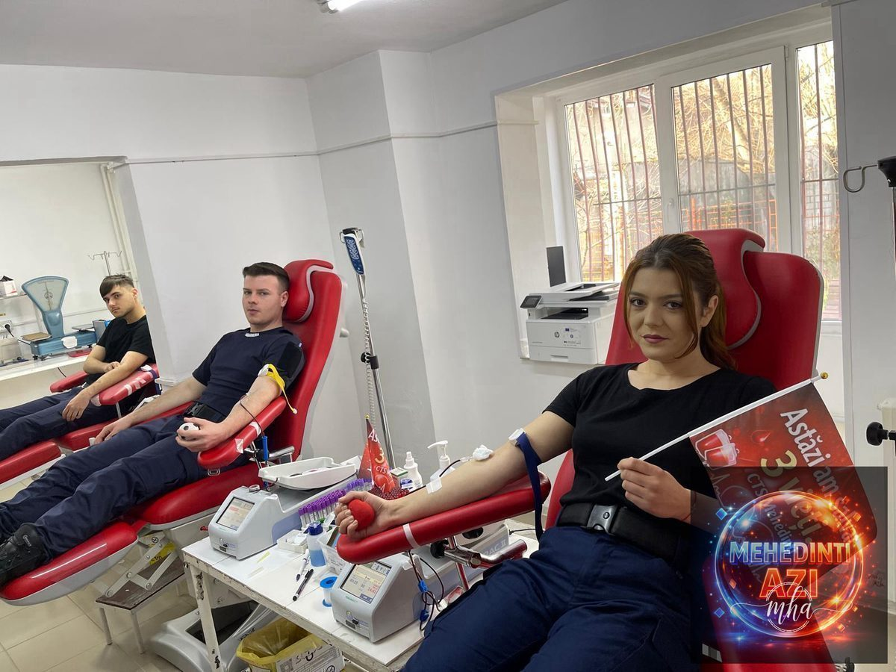
Spirit de solidaritate la Jandarmeria Mehedinți: Elevii jandarmi au donat sânge
Un gest nobil care poate salva vieți — elevii jandarmi din Mehedinți au participat la o campanie de donare de sânge.
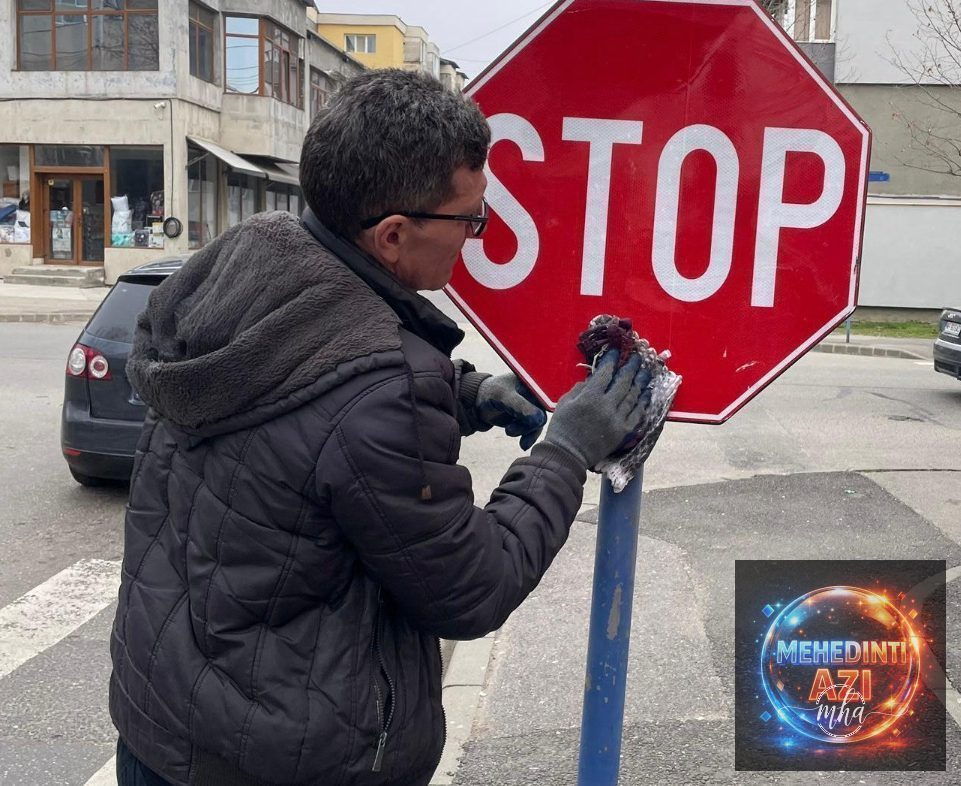
Indicatoare rutiere vandalizate, din nou în reparații la Drobeta Turnu Severin
Fenomenul se repetă. Autoritățile au demarat lucrările de înlocuire, dar cer cetățenilor să sesizeze actele de vandalism.
Apel umanitar în Drobeta: Giotina Costel Olivian are nevoie urgentă de ajutor pentru tratament
„Olly" duce o luptă grea cu boala. Familia cheamă comunitatea la solidaritate — 20.000 euro pentru tratament. Orice donație contează.
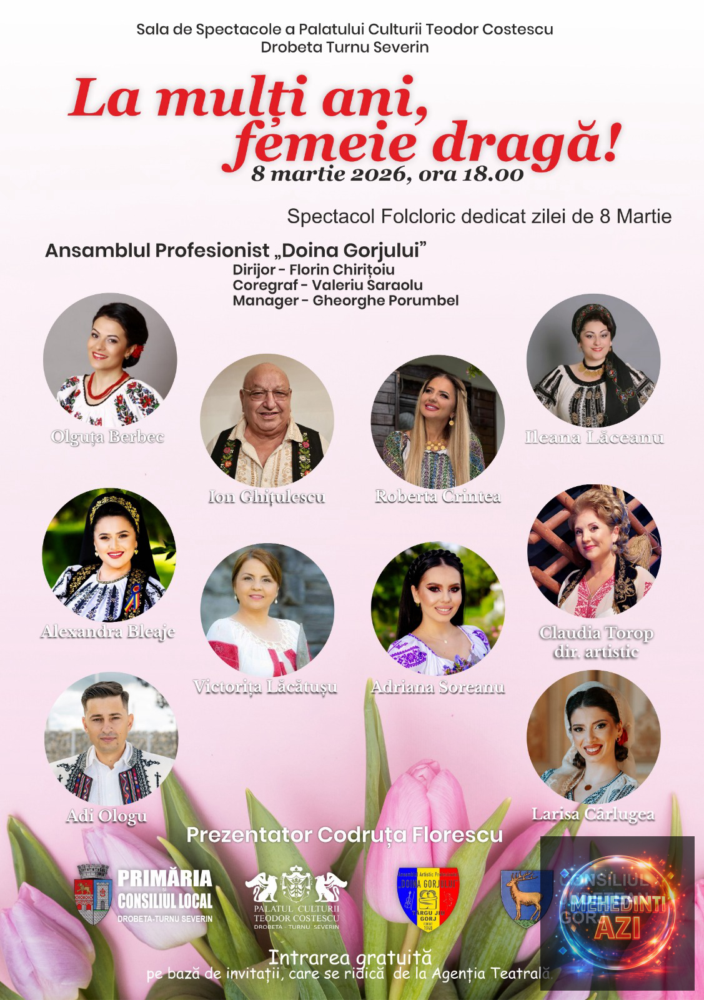
De 8 Martie, Ansamblul „Doina Gorjului" vine la Palatul Culturii Teodor Costescu din Drobeta
Spectacol folcloric dedicat Zilei Femeii. Pe scenă: Olguța Berbec, Ion Ghițulescu, Adriana Soreanu și mulți alții. Intrare gratuită pe bază de invitații.
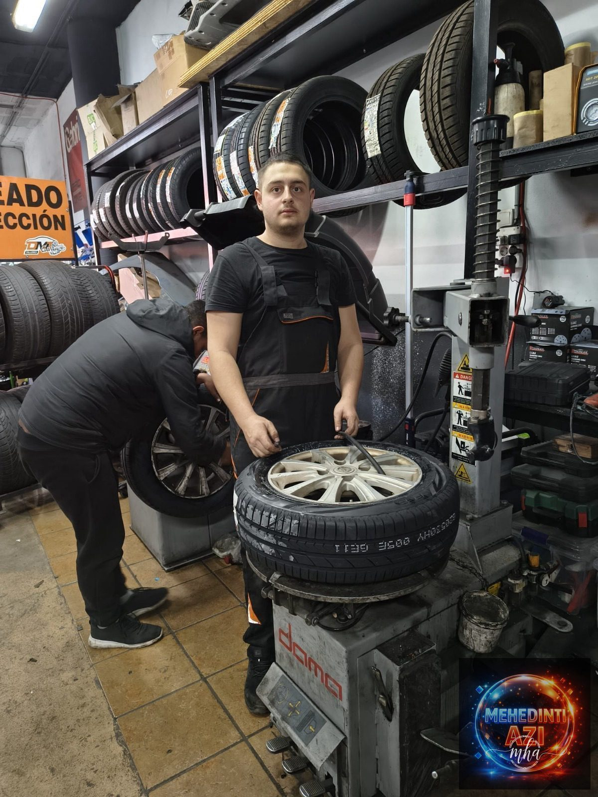
🇪🇸Elevi de la Liceul de Transporturi Auto Drobeta, stagiu Erasmus+ la DMJ Garage în Malaga 🇪🇸
Silviu Sperlea, Sorin Vucescu și Mihai Răducan (cls. XI-a A) au efectuat stagiu practic la partenerul de tradiție DMJ Garage din Benalmadena, în cadrul proiectului MOVE-UP Auto.
Vremea s-a încălzit — și gropile din Drobeta n-au mai răbdare. Când repară Primăria?
Sezonul cald deschide fereastra pentru asfaltare. Locuitorii, exasperați de carosabilul distrus de iarnă, cer autorităților să nu rateze oportunitatea.
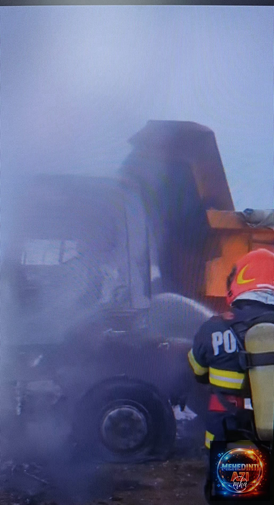
Autocamion cuprins de flăcări pe DN56, la Ostrovul Corbului. Pompierii din Drobeta, intervenție de urgență
Șoferul a coborât la timp din cabină. Echipajele ISU Mehedinți au lichidat incendiul după 40 de minute. Trafic restricționat temporar.
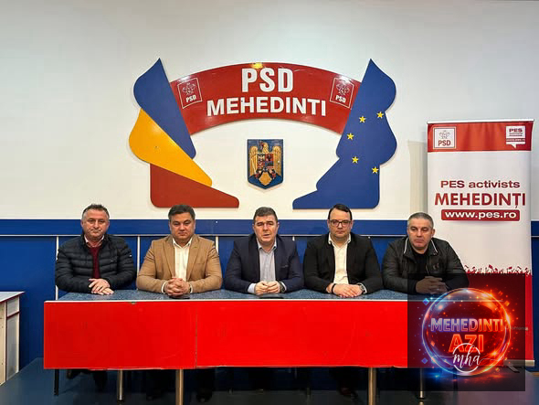
PSD pune presiune pe Coaliție: „Blocarea bugetului înseamnă blocarea României"
Miza: 3,4 miliarde lei pentru pensionari, familii cu copii și veterani. PSD cere adoptarea urgentă a bugetului de stat 2026.
Sirenele NU vor mai suna mâine în Mehedinți. Exercițiul „Miercurea Sirenelor", amânat
MAI a anunțat amânarea exercițiului național de alarmare publică din 4 martie 2026. Contextul de securitate, motiv invocat oficial.
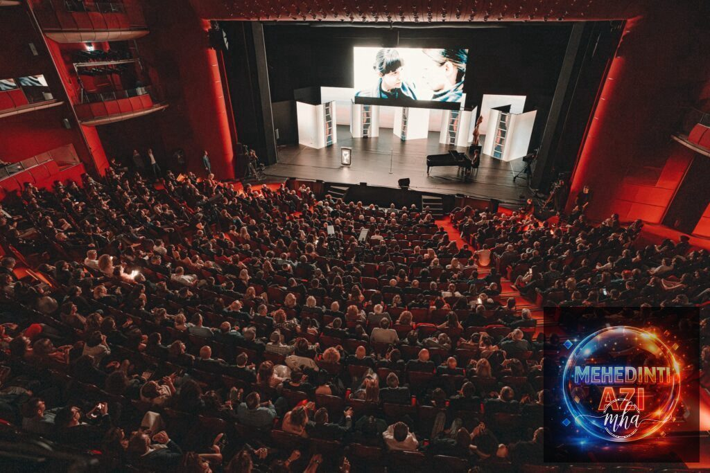
„Refrenul copilăriei" participă la Premiile Gopo alături de 76 de producții românești
Filmul regizat de Alin Brancu intră în competiția celei mai importante gale a cinematografiei românești.
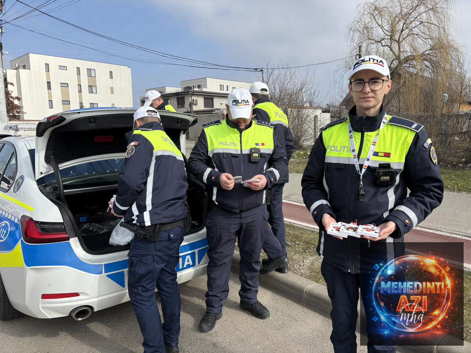
De 1 Martie, polițiștii rutieri din Mehedinți au oferit mărțișoare șoferițelor oprite în trafic
În loc de amenzi, agenții IPJ Mehedinți au surprins plăcut șoferițele cu mici simboluri ale primăverii.
Poliția Municipiului Drobeta‑Turnu Severin are conducere nouă. Comisar‑șef Țicu Dumitru Alin preia comanda
Comisar-șef de poliție Țicu Dumitru Alin a fost confirmat în funcția de șef al Poliției Municipiului Drobeta-Turnu Severin.
CS Drobeta, bilanț meciuri amicale: victorie 16-0 și egal cu U Craiova II
Opt meciuri amicale în ianuarie-februarie 2026. Echipa din Mehedinți s-a pregătit intens pentru noul sezon.

Liderii AUR, cu geci de mii de euro, scot oamenii săraci la protestele contra austerității
Contrastul dintre mesajul anti-austeritate și ținutele de lux ale unor lideri AUR a aprins internetul.
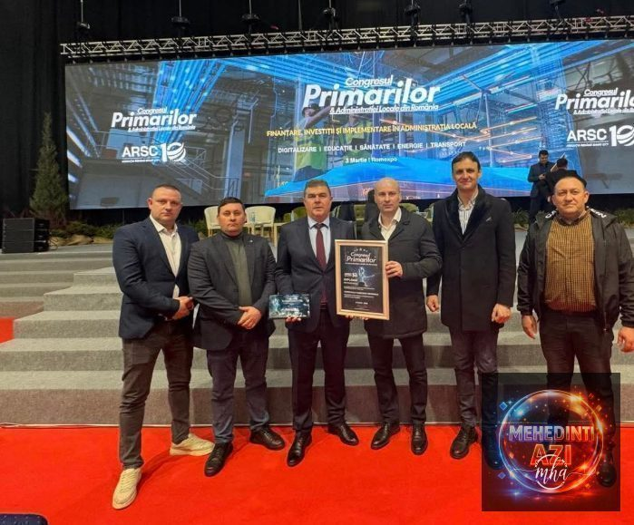
Consiliul Județean Mehedinți, premiat la Gala Smart City pentru modernizarea serviciilor publice
Județul Mehedinți, recunoscut la nivel național pentru digitalizare și modernizarea administrației publice locale.
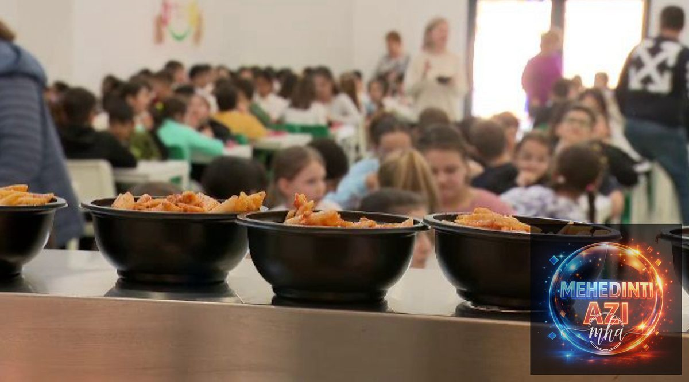
„O masă sănătoasă pe datorie" — Elevii din Mehedinți primesc mese pe credit din cauza blocajului bugetar
Firmele de catering livrează mese fără garanția plății. Bugetul de stat neadoptat blochează programul național.
Permis de conducere fals prezentat la control în trafic, în Mehedinți. Dosar penal deschis
Polițiștii rutieri au depistat un șofer cu permis contrafăcut. Bărbatul nu deținea documente valabile.